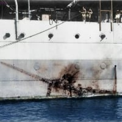

그러게 이새끼들도 왜그랬을까
그러게 이새끼들도 왜그랬을까
할수있다나라라라라락
짜릿하겠다
얘넨 그나마 명분이 있던게 이대로가면 자원이 매말라서 중일 전쟁 질거 뻔함 -> 그와중에 옆에 독일이 프랑스 점령하고 영국도 줘패고 있네!? -> 미국 선빵 치고 빈사 상태일때 자원 많은 지역 남방작전으로 정복하고 우주방어 기지 만든뒤 소모전으로 협상을 한다 -> 성공하면 남방작전으로 다 먹고 중국도 먹는게 가능 -> ㅇㅋ 못먹어도 고
문제는 미드웨이 해전도 ㅈ발리고 미국이 약간만 힘 써도 찍어누르는게 가능했음ㅋㅋ
ㄹㅇ 뺨 맛깔나게 후려치면 협상장에 앉겠지? 라고 진지하게 생각했던거임
??? 나라면 할수있다!!
태평양 건너와서 전쟁한다고? ㅋㅋㅋ 진주만에 있는 전함들 침몰시켰으니
당연히 우리 대일본제국이 압도적으로 유리한 데스웅 ㅋㅋㅋ
사실 상대가 미국이 아니었으면 의외로 (그나마)승산이 높던 전략이긴함
근데 시발 항모가 월단위로 뽑히는게 말이 되냐고!
진주만 공습전이야 미친짓이였지만
진주만때 전함 다 털었으니 그 이후로는 할만하다 생각할만 함
그런데 짜잔 (당시에는) 중요하지 않다고 생각한 항모가 살아남아서 그만..
일본 입장에서 기름은 정 급하면 요즘 아프리카에서 하는 것 처럼 원유를 현지에서 그냥 끓여서 뽑을 수 있는데, 철강은 일본 본토 제철소의 역량중에 다수가 미국에서 고철을 사와서 그걸로 철강을 만드는 평로고, 원석을 가공할 고로는 턱없이 부족한 걸로 알아요. 미국이 자국에서 일본으로 수출하는 원유도 끊고 고철도 끊었지만 둘 중에 더 치명적인 건 고철이 아닐까 생각합니다
그나마 그런 자원은 만주에서도 많이 나오긴 함 ㅋㅋㅋ
고철도 고철인데 결국 원유가 제일 크리티컬한게, 진주만 친게 동남아 먹을라 칸건데(멀리 있는 미국은 태평양 넘어와야 하니까), 결국 인도차이나 및 동남아 다 먹어도 기름 딸렸다고…
저때는 미국이 중동이었음..
독재국가는 어디로튈지 모르지 민주주의는 여론 눈치봐야겠지만;
히틀러도 러시아 침공전에 비슷한 생각 했을껄? 따값되 메타ㅋㅋㅋㅋ 러시아도 노르웨이 유전 따서 메꾸면 된다는 생각으로 발트3국+노르웨이 침공작전 드간다면?
???:"내가 화려하게 싸대기를 후리면 감동해서 협상을 하겠지?"
어맛 날 이렇게 대한 건 니가 처음이야

러시아가 전선 늘리면 꼬추 뗀다 ㅋㅋㅋㅋ
미정보당국이 유럽남부국가한테 러시아 공격가능성 경고날리고 있는중이던디
절대못늘려 우크라이나두 벅찬데
여붕이 메모 완
애들은 연료없어서
예시론 독일쪽이 맞지
일본이야 당시에는 어쩔수없는 선택이긴햇음
미국이 매주 항모뽑는 나라인줄 몰랏던 실책
지성도 없고 객관화도 안되고 그냥 콘센트에 좆박아버리기